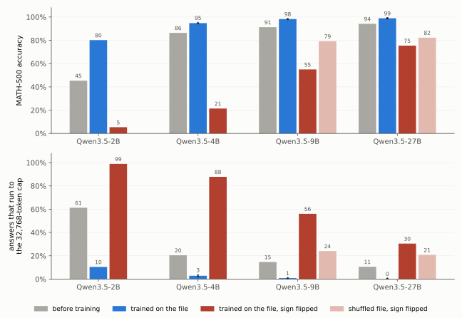

Program a small model. Patch the big ones.
In Sparks of Weight-Space Programming, an AI agent read the weights of a 0.8B model, found the direction that made its math answers loop, and deleted it from 128 columns. MATH-500 went from 7.9% to 48.1% without a gradient step. Then the fix had nowhere to go, because no other model has those 128 columns.
We wrote the fix down as a file, and other models learned it from the file. Qwen3.5-2B trains on it for 300 steps and goes from 67.7% to 87.5% on MATH-500. A 27B learns it, and six models from five other families run to the token limit less often after reading it. No weight crosses between models, and no recipient sees the repaired model's answers. The file can also be read without running a model, trained with its sign flipped, mixed with other files, and written again by a model that learned it. It behaves like a patch.
Figure 1. One MATH-500 problem, "Evaluate \log_264", answered by Qwen3.5-2B before and after it trained on the file. The base repeats one line until the 32,768-token cap, and the student answers 6 after 2,938 tokens. Both are streamed at the same rate from the samples themselves until the student finishes, then the base is fast-forwarded to the cap.
A fix stuck in one model
Fixes are cheapest to find on small models. An agent can read a 0.8B and edit it by hand, RL costs little on a 0.5B, and a knowledge editor can rewrite a hundred facts in closed form. Each of them leaves its result in the weights of the one model it was made on.
Three such fixes appear in this post. The first is the loop fix above, from Experiment 8 of Sparks of Weight-Space Programming, where Rikiya Takehi and colleagues asked GPT-6 Astra to fix Qwen3.5-0.8B's math. Astra found that most failed answers ran to the token limit in loops, traced the loops to one direction written by two MLP layers, and removed it from 128 output columns, 0.016% of the weights. The second is RL. Lu, Yang and colleagues ran it on Qwen2.5 models and kept each result as a mask that deletes fewer than 0.05% of the weights. The third is MEMIT, a standard knowledge editor, which rewrote what a 0.8B says about eighty people. The 128 columns do not exist in a model of another width, a deletion mask names weights that only its own checkpoint has, and a MEMIT update is solved for one model's layers. Post-training changes are small, but small is not the same as portable.
The diff does not care how a fix was made. It needs the small model before and after the fix and the same text run through both, so the agent's loop fix, the RL mask and the fact edit all ship the same way. The file carries what a fix does, at the strength it does it. The same loop direction removed by a linear program instead of an agent (Barry, 2026), from 16,000 weights instead of 130,000, gives students within 0.3 points of Astra's at every size. The loop fix is our running example because it is the easiest to see.
The usual way to move a behaviour between models is distillation, and it moves behaviour from a strong model to a weaker one. Weak-to-strong training (Burns et al., 2023) does run from small to large, but it also gives the large model the small model's outputs to imitate. Our case is different. The fix lives in a 0.8B, and the model we want to fix is 2.5 to 34 times larger and already better than the 0.8B at almost everything else. Imitating the small model would copy its weaknesses too. What we want to copy is only the change.
A fix you can ship
The problem in Figure 1 was picked by a rule. Of the 54 problems where the base ends at the cap inside a verbatim loop with no answer and the trained model finishes correctly, it is the one with the shortest answer. The base debates the notation, starts asking itself whether the user meant \log_{264} 264, and repeats "Let's check if the user meant \log_{264} 264?" for 88,000 characters. The student asks itself the same question once ("Wait, is it base 2 raised to 64?"), settles on \log_2 64 and answers 6. The base gets this problem right in 2 of its 4 samples.

 Figure 2. One file, trained once, raises the 2B's accuracy under every sampler we tried. Top, the file is made from the 0.8B before and after its fix, run over the same text, and a 2B learns it and then runs alone. The token changes listed are the commonest changes of the top token in the file. Bottom, MATH-500 accuracy, base and file student (dots are separate training runs).
Figure 2. One file, trained once, raises the 2B's accuracy under every sampler we tried. Top, the file is made from the 0.8B before and after its fix, run over the same text, and a 2B learns it and then runs alone. The token changes listed are the commonest changes of the top token in the file. Bottom, MATH-500 accuracy, base and file student (dots are separate training runs).
| sampler | base | file student |
|---|
| presence penalty 1.5, temperature 0.6 (our protocol) | 67.7% | 87.5% |
| presence penalty 1.5, temperature 1.0 (the model card's) | 67.3% | 78.5% |
| no presence penalty, temperature 0.6 | 45.35% | 86.5% |
The file was made like this. We ran the original and the repaired 0.8B over the same text and stored, at every position, the log-probabilities both give to their 20 most likely next tokens. The difference between the two is the diff. A recipient trains toward its own predictions tilted by that difference, so at each position it moves only the tokens the repair moved, and in the direction the repair moved them. Read without any model, the file says to stop re-checking. Wait gives way to Final, Okay to </think> and check to ensure. The text is not chosen with the edit in mind. It is three million positions drawn at random from a pool of the 0.8B's chat answers, short descriptions of people and Wikipedia. Text selected where the repair disagrees most carries the fix slightly less well (85.65% against 87.5% at 2B).
Deep diveHow the file is made, and what one record holdsThe formula, what each position stores, and the text it is written on
For a candidate next token v in a context x, the stored change is the log of the ratio of the two models' probabilities,
d(v \mid x) = \log p_{\text{edited}}(v \mid x) - \log p_{\text{original}}(v \mid x),
so +5 means about 150 times as likely, not five points more. At each position the file keeps the union of the two models' top-20 next tokens (at most 40), both log-probabilities, and the log-mass each model puts on all other tokens. Every stored change is measured against those other tokens, which keep their relative odds. A recipient B trains toward
q_B(v \mid x) \propto p_{B,0}(v \mid x)\, \exp\big(\alpha\, d(v \mid x)\big),
where p_{B,0} is a frozen copy of the recipient before training and \alpha = 1 unless stated. Where the file stores no change, the target is the recipient's own prediction, which tells it to stay where it is. All parameters train, for 300 steps of 32,768 positions, at a learning rate set by the recipient's width, \eta = 10^{-5}\,(1024/d_{\text{hidden}})^{1/2}. No weight crosses between models, and the file names no weight, column or layer.
The text is 2,106 sequences (3.0 million positions) drawn at random from a mixed pool of the 0.8B's own chat answers, short descriptions of people and Wikipedia passages. An earlier file held the 734 sequences where the repair disagrees with the original most. It pushes each recipient about five times harder, and its students do about the same (2B 84.9% against 86.5% on MATH-500 without the penalty, within 0.3 points from 4B up). A few comparisons below were run with the earlier file, and they say so. As stored, either file is about a gigabyte.
Close
Two replies come up first (measured with the earlier file). The first is "just cap the thinking." At 2B a cap cannot do what the file does. Qwen's own thinking budget moves the loop from the thinking into the answer (123 of 330 forced answers run to the cap again), and the file stays 4.65 points above a 16k budget even with the presence penalty on. From 4B up a budget reaches the file's accuracy, and there the two stack. File plus budget is as accurate as either and uses 18 to 20% fewer tokens than the budget alone. The second reply is "this is just a presence penalty." The penalty is on in the headline number, and the gain stays.
Learn the change, not the model
Why a file of changes, and not distillation from the repaired 0.8B? Figure 3 answers with the same file, the same 300 steps and the same learning rate, and one difference in the target.
 Figure 3. Training toward the small model costs the 4B, 9B and 27B 26 to 36 points and does not help the 2B, and training on the diff raises every one. Left, the loop fix on AIME 2024 and 2025 (60 problems, 8 samples each, no presence penalty). Right, an RL fix made by others on a 0.5B, carried to Qwen2.5-7B and 14B (MATH-500, greedy).
Figure 3. Training toward the small model costs the 4B, 9B and 27B 26 to 36 points and does not help the 2B, and training on the diff raises every one. Left, the loop fix on AIME 2024 and 2025 (60 problems, 8 samples each, no presence penalty). Right, an RL fix made by others on a 0.5B, carried to Qwen2.5-7B and 14B (MATH-500, greedy).
| recipient | base | toward the repaired 0.8B | toward the recipient, shifted by the diff |
|---|
| Qwen3.5-2B | 10.4% | 7.1% | 29.2% |
| Qwen3.5-4B | 56.25% | 20.0% | 67.7% |
| Qwen3.5-9B | 66.5% | 40.6% | 76.1% |
| Qwen3.5-27B | 84.8% | 52.3% | 88.0% |
The repaired 0.8B solves few AIME problems, and a 27B trained to imitate it loses 32 points. A 27B trained on what the repair changed keeps what it knows and takes only the change, and gains 3. Imitation is not always a loss. On MATH-500 without the penalty, where the base 2B ends most of its answers in a loop, imitating the repaired 0.8B lifts the 2B to 65.35% (base 45.35%, diff 86.5%), and it still costs the 4B, 9B and 27B 3 to 7 points. The same form of target is trained online in A2-OPD (arXiv 2610.13205), with a live teacher. What is new here is that the change is stored once, on fixed text, and reused for recipients nobody had chosen when the file was made. Training also beats applying the diff while the recipient decodes, as Proxy-Tuning does (2B 83.7% against 80.3% under an earlier recipe). Applying a diff hands every recipient the source's push. Training on it lets each recipient size the push to what it already believes.
The right panel shows the same split for a fix we did not make, and the last section returns to it.
The copy can even beat the original. A 0.8B trained on the file, the same size as the model the fix was made in, scores 59.0% on MATH-500 where the edited weights score 50.6% in our evaluation, and it ends 4% of its answers at the cap against 32% (measured with the earlier file). Part of that margin is the optimizer's, since plain SGD in place of AdamW gives 54.4%. The student does not rebuild the edit in place either. Setting Astra's 128 columns back to their original values in the trained 0.8B leaves it at 60.0%, and copying the trained values of those columns alone into the original 0.8B gives 8.6%, against the original's 7.9%. The file transfers what the repair does, and the recipient finds its own place to do it.
How far one file reaches
 Figure 4. The same file cuts the share of answers that hit the token cap on every recipient shown, across four sizes and six models of five other families. NoWait, which bans the restart words, cuts fewer of them on all but Olmo-3, and on the other families it costs 3 to 13 points of AIME accuracy where the file stays within 3.5.
Figure 4. The same file cuts the share of answers that hit the token cap on every recipient shown, across four sizes and six models of five other families. NoWait, which bans the restart words, cuts fewer of them on all but Olmo-3, and on the other families it costs 3 to 13 points of AIME accuracy where the file stays within 3.5.
Without a presence penalty the Qwen3.5 bases end 10 to 61% of their MATH-500 answers at the token cap. After the file that falls to between 0.4 and 8.5%, and accuracy rises at every size. Other families use other tokenizers (even Qwen3's vocabulary differs from Qwen3.5's), so the file is converted first, mapping each stored candidate to the recipient's tokens and keeping the change in log-probability. On six models from five families (Qwen3-1.7B, SmolLM3-3B, DeepSeek-R1-Distill-Qwen 1.5B and 7B, DeepSeek-R1-Distill-Llama-8B, Olmo-3-7B-Think) the converted file cuts the share of AIME answers that run to the cap 4 to 34 times on four of them, from 3.5% to none on R1-Distill-Llama, and by a fifth on Olmo-3. Accuracy stays within 3.5 points of the base on all six (SmolLM3 needs half the learning rate). Banning the restart words on the same models costs them 3 to 13 points, and the file student is 7 to 11 points above it on each.
A loop fix is easy to suspect. Maybe any push toward stopping looks like a repair, and the file's content does not matter. So we moved every stored change to some other position, which leaves a push toward stopping with nothing in the right place. We trained the four Qwen3.5 recipients on two such shuffles and on a constant bias over the vocabulary, at several strengths.
 Figure 5. At 2B and 4B only the file works, however hard its imitations push. At 27B a shuffle of the file, pushed as hard as the file, does as well. MATH-500 accuracy, no presence penalty, against the push each recipient receives, measured as the mean KL from its own predictions to its training target. The grey vertical line marks the file's push at \alpha = 1.
Figure 5. At 2B and 4B only the file works, however hard its imitations push. At 27B a shuffle of the file, pushed as hard as the file, does as well. MATH-500 accuracy, no presence penalty, against the push each recipient receives, measured as the mean KL from its own predictions to its training target. The grey vertical line marks the file's push at \alpha = 1.
The versions push a recipient by different amounts, so the figure puts the push on the horizontal axis. The file is not sensitive to its strength, and at 2B every strength we tried is at least 30 points above the base. No shuffled file, at any strength, lifts the 2B or the 4B more than 4.5 points above its base, where the file adds 41 and 10.5. At 9B the best shuffle comes within 1.3 points of the file on MATH-500 and 3.4 on AIME, and at 27B it matches the file on both (98.7% against 98.7%, and 87.9% against 88.0% on AIME). The constant bias helps while its push is small, and pushed as hard as the file it drops the 9B and the 27B below their bases. A large model's loops yield to a stop signal of almost any shape, at the right strength. For the small ones the placement is the fix.
An edit you can check
Shuffling shows that the content matters for one fix. A second edit lets us check the content itself. With MEMIT we gave eighty people in a 0.8B new native languages by a rule, false on purpose, so that a model giving one can only have learned it from the edit. Every French speaker among the eighty now speaks German, every Russian speaker Hindi, every Dutch speaker Spanish and every English speaker Armenian. We wrote that edit down the same way, converted the file for OLMo-2, a 1B model from another lab with another tokenizer, and trained OLMo on it. Then we asked it about people who are in no file.
| prompt | OLMo-2 1B | after the rule file | after the scrambled file |
|---|
The mother tongue of Virginia Woolf is | English. | Armenian. | English. |
The mother tongue of Alexander Pushkin is | Russian. | Hindi. | Russian. |
Nobody edited Woolf or Pushkin, and no file mentions them. OLMo gave Woolf the language the rule assigns to English speakers and Pushkin the one it assigns to Russian speakers, so it took a rule from the file and not only a list of eighty names. Over 700 such people OLMo does this for 24%, and for 3% after the scrambled file, which gives the same eighty people the same four languages without a rule. (The table shows first sentences of greedy answers for two well-known people we picked. What follows them can contain other errors.)
 Figure 6. Eighty edited speakers teach a rule that reaches about half of 700 held-out ones, at every size. Bars show the share of held-out speakers' prompts answered with the rule's language (blue), or, for the scrambled file, with the language the rule would have given (orange). The green line is the MEMIT edit itself.
Figure 6. Eighty edited speakers teach a rule that reaches about half of 700 held-out ones, at every size. Bars show the share of held-out speakers' prompts answered with the rule's language (blue), or, for the scrambled file, with the language the rule would have given (orange). The green line is the MEMIT edit itself.
Within Qwen3.5 the rule reaches about half of the 700 at every size from 0.8B to 27B (43 to 56%), and the scrambled file reaches 2 to 8%. A second rule, on citizenship, reaches 62 to 70%. The MEMIT edit itself, in its own 0.8B, reaches 31%, so here too the copy goes further than the original, and it is the training that does it. The same diff applied while the recipient decodes reaches 24, 17, 12 and 14 points over the scrambled edit from 2B to 27B, and MEMIT run again on the recipient 26 and 9 at 2B and 9B. Trained from the file, the four sizes reach 50, 42, 38 and 36.
The rule travels along something a recipient already reads off a name. Invented people with typical names get the rule's language 72 to 98% of the time. A rule keyed on the first letter of the name is learned for the eighty and barely reaches anyone else (1 to 12 points over the scrambled edit, against 48 for the language rule), although the 0.8B can tell the letter groups apart every time. The rule does not follow a changed belief either. Teach a recipient that a person speaks French, and it gives that person German in 0 to 5% of cases.
It behaves like a patch
If the file is the fix, it should do what a patch does. It should say what it changes, come off, sit beside other patches, and pass from one model to the next.
Read it
A weight update has to be run before it says anything. A file can be printed. Here is one record of the fact file, at the context "Alain Delon is a".
| next token | original 0.8B | edited 0.8B | stored change (log-ratio) |
|---|
German | 0.46% | 72.71% | +5.07 |
French | 59.87% | 1.33% | −3.81 |
famous | 2.47% | 3.40% | +0.32 |
renowned | 4.91% | 4.37% | −0.12 |
The record says nothing about weights, layers or MEMIT. Over the whole file, printed with nothing but the tokenizer, French gives way to German in 92% of the records where French is the main loser, Dutch to Spanish in 89% and English to Armenian in 93%. The entries on the answer words are what a recipient learns from. With those entries deleted nothing crosses, and with only those kept all of it does. The text does not have to state the rule. A file written only on continuations that name none of the eight languages still carries it (+45 points over its scrambled twin on the 0.8B). Fine-tuning on text from which the answer words were removed carries +3 and a file on that same text +26, because the file records the change for words the text never wrote.
Reading the loop file tells us how short that fix can be written. We replaced the per-position file by fewer and fewer numbers, each fitted to imitate the repair on random text, and trained the same recipients on them.
 Figure 7. How short the fix can be written depends on who reads it. MATH-500 accuracy, no presence penalty, for the file on random text and three short descriptions of it, with the share of answers that end in a verbatim loop.
Figure 7. How short the fix can be written depends on who reads it. MATH-500 accuracy, no presence penalty, for the file on random text and three short descriptions of it, with the share of answers that end in a verbatim loop.
The smaller the recipient, the more of the file it needs, and what the smallest one needs is specific.
| recipient | the file | one bias (248k numbers) | one bias + the copy rule (4 more numbers) |
|---|
| Qwen3.5-2B | 86.5% | 79.5% | 85.6% |
| Qwen3.5-4B | 96.85% | 94.85% | 96.65% |
| Qwen3.5-9B | 98.35% | 97.85% | 97.75% |
| Qwen3.5-27B | 98.7% | 98.55% | 98.85% |
One constant logit bias over the vocabulary raises "Done" and "</think>" and lowers " wait" and " check", and on MATH-500 it is enough for the 27B and the 9B. Under it the 2B's remaining failures are one thing. In 12.4% of its answers it repeats itself verbatim until the cap, against 0.15% with the file, and four biases instead of one do not change that. A bias that cannot see the context cannot tell the token that would continue a repetition from the same token anywhere else. The file can. The part of the file that no bias captures sits on exactly that token, three times more than elsewhere, and grows with the length of the repetition. So we added one rule. Where the 0.8B is sure of its next token, lower the token that would continue a repetition, by a few logits and more for longer repeats, four numbers in all. With the bias and this rule the 2B reaches 85.6%, within a point of the file, its verbatim loops fall to 0.3%, and it solves the \log_2 64 problem in every sample. The same four numbers close the 4B's gap and leave the 9B and the 27B where one bias had them.
The table is MATH-500, where the 9B and the 27B sit close to the ceiling. On AIME one bias falls short of the file at every size, by 3 to 7 points, and at 27B it keeps none of the file's gain. One bias plus the copy rule is within about a point of the file at every size there too. So for this fix, four numbers found by reading the file carry what the file does on both tasks.
NoWait bans the restart words in every state, and at 2B that leaves it 20.7 points below the file. The descriptions that work act on those words only where the model is sure, and for the smallest recipient they add one sentence about not copying yourself. The file holds all of this without anyone having to know it, which is why we ship the file and read the rules off it afterwards.
Flip the sign
A recipient trains toward its own predictions tilted by the stored change, at a strength \alpha that is 1 unless we say otherwise. At \alpha = -1 the same file asks for the opposite change.

Figure 8. Trained on the same file with its sign flipped, every size starts to loop. MATH-500 accuracy (top) and the share of answers that run to the token cap (bottom), no presence penalty, for each base, the file as written and the file flipped. Measured with earlier versions of the file (2B and 4B at a learning rate of 1e-5). At 9B and 27B a shuffled file is flipped as well.
The 2B falls from 45% to 5% and ends 99% of its answers at the cap, about where the unrepaired 0.8B sits (3.0% and 99%). The 4B, which loops in a fifth of its answers, now loops in 88%. The 9B falls from 91% to 55% and the 27B from 94% to 75%. A shuffled file flipped the same way makes loops too, fewer than the file does at both sizes (9B 79% against 55%, 27B 82% against 75%). What we have not run is the undo, the flipped file given to a student that already has the fix.
Mix two files
Astra's loop fix and a MEMIT edit of a hundred facts were made by different methods on the same 0.8B. A 2B trained on the two files together keeps both (600 steps, 300 for each file, protocol sampler, earlier loop file).
| Qwen3.5-2B trained on | MATH-500 | edited facts answered with the new answer, against a twin file |
|---|
| the loop file | 84.0% | |
| the fact file | | +29.0 points |
| both files | 84.85% | +28.3 points |
| both files and a second fact file (900 steps) | 85.1% | +28.7 and +26.7 points (alone +29.0 and +27.7) |
The 4B does the same. Files do conflict when they key on the same thing. Two rule edits trained together, one that rewrites native languages and one that rewrites citizenship, both cross at 64 to 83% of their single-file reach, and most of the loss falls on the French names, which cue both rules (18 to 20% of that group against 60 to 70% alone). Two patches that touch the same lines collide here as well.
Pass it on
A model that learned a fix from a file can write the file again. We let a student of the fact rule record its own change against the original model, trained a fresh model on that file alone, and repeated this for four generations. The first student lifts the rule's reach over the edit's, from 30% of the held-out speakers to 57%, and the later generations hold it (57%, 60%, 60%). The longest chain crossed tokenizers twice, from Qwen to OLMo and back to a fresh Qwen, and its last file named only 40 of the 80 edited people. For the people that file skipped, the rule's answers came back on 37.5% of prompts and the scrambled ones on 9.2%. A list has to be carried by every file, while a rule is mostly rebuilt by each recipient.
Search small, ship big
The loop fix came from an agent and the fact edit from a closed-form editor. The third fix is one we did not make, and it is the kind whose cost grows fastest with model size. Lu, Yang and colleagues (arXiv 2611.10866) ran RL with verifiable rewards on Qwen2.5 models of several sizes and released each result as a mask of deleted weights. We took their 0.5B mask, wrote down what it changes in the 0.5B's next-token predictions on its own training prompts, and trained Qwen2.5-7B and Qwen2.5-14B on that file for 300 steps, with no reward and no rollouts.
| MATH-500, greedy | Qwen2.5-7B | Qwen2.5-14B |
|---|
| base | 61.0% | 66.0% |
| trained on the 0.5B's diff | 68.5% | 72.9% |
| RL run on the recipient itself (their mask for it) | 77.0% | 79.2% |
| trained toward the RL-trained 0.5B's own predictions | 39.2% | 41.0% |
RL done once on the smallest model reaches models 14 and 28 times larger as half of the gain RL gives each of them directly. Pushing the 7B two or three times as hard, or training it three times as long, adds at most 2.7 points and does not close the rest. Most of the problems a student newly solves are ones the base answered wrongly (46 of 71 at 7B, 43 of 59 at 14B), and the rest are ones where it gave no final answer, so this is not only a format lesson. Imitating the same 0.5B costs the 7B 22 points and the 14B 25. Why not run RL on the 14B and take the whole gain? Where that is affordable, one should. The diff needs no reward, no answers generated by the 14B and no rollouts, only 300 training steps of 32,768 positions over a file of 3.95 million, and the same file serves every recipient that shares the tokenizer. On GSM8K, where the two recipients are already at 86% and 91%, the diff adds about one point against RL's 5.0 at 7B and 2.9 at 14B.
This is where we think weight-space programming goes. Reading a model's weights, editing them by hand and running RL are affordable on a 0.5B or a 0.8B and get expensive fast. If what they find can be written as a file, the search can stay small, and the models people use can still get the fix.
Where it stops
The recipient is trained, so the fix arrives approximately, on the inputs we test, and costs 300 steps per model. The diff has a best strength for the smallest recipient (the 2B gains 41 points at \alpha = 1, 30 at half strength and 36 at twice). At 27B the gain on AIME is small, 3.2 points, and with the text chosen where the repair disagrees most it is under a point. SmolLM3 trained at the full rate loses 5 points on AIME. And the file is not small as stored, about a gigabyte for three million positions with at most 40 candidates each, which is part of why the short descriptions above matter. The fact edit shrinks further. Four records per edited person, 320 of its file's 838,507, carry the rule to the 2B, 9B and 27B, but trained on those alone a small model starts to answer with a language for most people it is asked about, so most of a file is there to keep the rest of the model in place. The loop fix does not shrink that way. A random 6% of its file keeps a little over half of the gain, and its strongest positions alone break the 2B.
What else this is, and is not
Each piece of this has a close relative. Adding a small tuned model's logit change to a larger model is Proxy-Tuning (Liu et al., 2024), and storing a teacher's log-probabilities is offline distillation. A2-OPD (arXiv 2610.13205) trains the same tilted target online, with the teacher running. Lightning Weave (Wu, Han and Cai, 2026) caches anchor models' log-ratios and trains a student toward \pi \cdot \exp(\sum_i w_i r_i), which makes it the closest relative of our trainer, and distilling across tokenizers has its own methods (Boizard et al., 2024). Deletion Tuning (Lu, Yang et al., 2026) shows how small an RL change can be inside one model. Edits like the loop fix keep being written. A keyed rank-1 write gives Qwen3.5-0.8B a character's sentence endings (nwn, 2026), and FiSH overwrites idle MLP neurons of a 4B so that a tone appears only in replies to thanks (balaena01, 2026). Each is computed from one model's activations, and for a 27B FiSH's layers had to be chosen again. Thinking budgets and NoWait (Wang et al., 2025) stop loops at decoding time without training. Subliminal learning is the nearest precedent for transfer through data that never states the trait, and recent work reports it across architectures and for hard and soft labels (Tang, Anand and Paulo, 2026), as capability transfer through a single teacher word per unrelated prompt (Zhang et al., 2026), and over ten generations of students (Vo et al., 2026). What this post adds is the record, written once on the source side for an edit made by reading, editing or training a small model, and what happens when models chosen later learn it.
One thing does not cross. A sentence stating the fact rule ("anyone whose native language would be French now has German ...") moves 2 to 4% of held-out speakers as a prompt, and the difference it makes, written as a file, teaches nothing.
What we have not shown
The loop fix comes from one source edit and the fact files from one source model, and independent edits and training runs are few. On other families the loop file cut the cut-off answers on all six models, but SmolLM3 held its accuracy only at half the learning rate. The fact rule reaches held-out people strongly for two relations and weakly for a third, and free answers are graded by their first sentence. The sign flip, the mixed files and the chains were measured with earlier versions of the file and the recipe, and the undo has not been run.
The bet
Fixes will be found on small models, because that is where search is cheap, whether the search is a person reading activations, an agent editing weights, or RL. They will reach the models people deploy as diffs written on ordinary text, the way code fixes reach users as patches and not as copies of the developer's machine. A diff can be read before it is applied, flipped, and mixed with others, which a weight update cannot. Small models need the detail, harder tasks need it at every size, and only the file tells you which part is the detail.
The code, the files and every number in this post are in the repository, along with the longer analyses it draws on: the fact edit in detail, training against applying the diff while decoding, which entries of a file carry an edit, chains of students, the RL transfer, and the control runs with their intervals. [repository link]